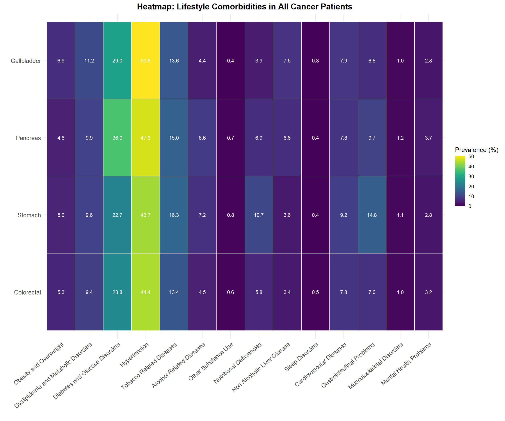
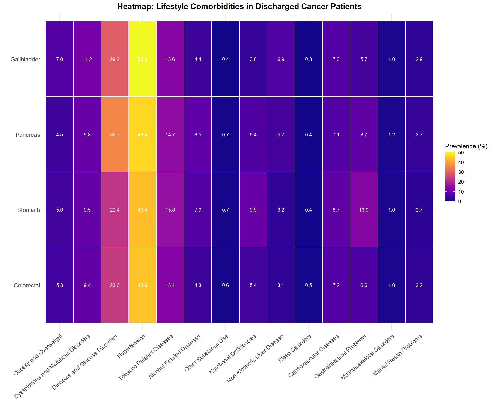
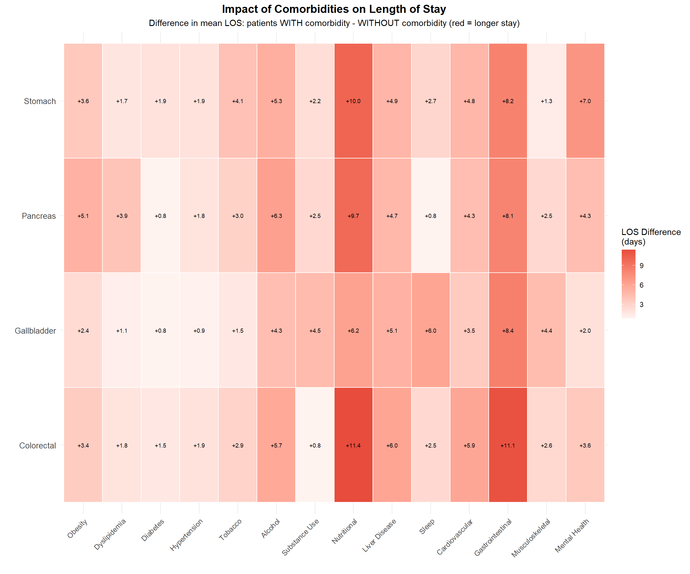

Malignant neoplasms of digestive organs C15-C26 in Chile from 2019 to 2023
Autores/as
María Fernanda Gallego Muga
Gregorio Palacios Pino
Valentina Meilan Ip Francesconi
Amaru Simón Agüero Jiménez
Fecha de publicación
28 de agosto de 2025
1 Exploratory data analysis
Código
# ==========================# Load/Install packages# ==========================use_packages <-function(pkgs){ new_pkgs <- pkgs[!(pkgs %in%installed.packages()[,"Package"])]if(length(new_pkgs)) install.packages(new_pkgs, dependencies =TRUE)invisible(lapply(pkgs, library, character.only =TRUE))}# Lista completa de paquetes necesarios desde el inicio# IMPORTANTE: MASS se carga antes de tidyverse para evitar conflictos con select()use_packages(c("MASS", # Statistical functions (loaded first to avoid conflicts)"tidyverse", # Data manipulation and ggplot2 (loaded after MASS)"readxl", # Read Excel files"knitr", # Report generation"kableExtra", # Table formatting"lubridate", # Date handling"htmltools", # HTML tools"viridis", # Color palettes"reshape2", # Data reshaping"glmmTMB", # Mixed models"lme4", # Linear mixed effects"pROC", # ROC curves"caret", # Machine learning"ResourceSelection", # Hosmer-Lemeshow test"car", # Regression diagnostics"patchwork"# Combine plots))Sys.setenv("VROOM_CONNECTION_SIZE"=10000000000)base_path <-gsub("/docs", "", getwd())
Código
# Define output directory and fileoutput_dir <-file.path(base_path, "output_files")output_file <-file.path(output_dir, "data_cancer_processed.rds")# Create output directory if it doesn't existif (!dir.exists(output_dir)) {dir.create(output_dir, recursive =TRUE)}# Check if processed data already existsif (file.exists(output_file)) {# Load existing data data_cancer <-readRDS(output_file)} else {# Create new database# ==========================# Load and prepare data from 2019-2023# ========================== years <-2019:2023 all_data <-list()for (year in years) { file_pattern <-paste0("GRD_PUBLICO_.*", year, ".*\\.csv$") file_path <-list.files(file.path(base_path, "data"),pattern = file_pattern,full.names =TRUE )if (length(file_path) >0) { year_data <- readr::read_delim( file_path, delim ="|", escape_double =FALSE,col_types =cols(.default =col_character(),IR_29301_COD_GRD =col_number()),trim_ws =TRUE ) year_data$year <- year all_data[[as.character(year)]] <- year_data } }# Combine all years into single dataframe data_all_years <-bind_rows(all_data)# Clean up memoryrm(all_data)# ==========================# Load catalogs# ========================== codigos_grd <- readxl::read_excel(file.path(base_path, "data/códigos grd.xlsx"), sheet ="IR - GRD") |>`colnames<-`(c("IR_29301_COD_GRD", "COD_GRD_CAT")) codigos_hosp <- readxl::read_excel(file.path(base_path, "data/códigos grd.xlsx"), sheet ="Hospitales") |>`colnames<-`(c("COD_HOSPITAL", "COD_HOSPITAL_CAT")) |>mutate(COD_HOSPITAL =as.character(COD_HOSPITAL)) codigos_pab <- readxl::read_excel(file.path(base_path, "data/códigos grd.xlsx"), sheet ="Tipo de Pabellon") |>`colnames<-`(c("USOSPABELLON", "COD_PABELLON_CAT")) |>mutate(USOSPABELLON =as.character(USOSPABELLON))# Join catalogs data_all_years <- data_all_years |>full_join(codigos_grd, by ="IR_29301_COD_GRD") |>full_join(codigos_hosp, by ="COD_HOSPITAL") |>full_join(codigos_pab, by ="USOSPABELLON")# Clean up catalogsrm(codigos_grd, codigos_hosp, codigos_pab)# ==========================# Filter patients with target cancers# ========================== icd_target_primary <-c("C16","C18","C19","C20","C23","C25") all_diag_cols <-paste0("DIAGNOSTICO", 1:35) all_diag_cols <-intersect(all_diag_cols, names(data_all_years))# Normalize diagnostic fieldsfor(col in all_diag_cols){ data_all_years[[paste0(col, "_NORM")]] <-str_to_upper(str_trim(data_all_years[[col]])) }# Filter function has_target_cancer <-function(row){ diag_values <-unlist(row) diag_values <- diag_values[!is.na(diag_values) & diag_values !=""]any(str_detect(diag_values, paste0("^(", paste(icd_target_primary, collapse ="|"), ")"))) }# Apply filter norm_cols <-paste0(all_diag_cols, "_NORM") data_norm_subset <- data_all_years[, norm_cols] has_cancer_vector <-apply(data_norm_subset, 1, has_target_cancer) data_cancer <- data_all_years[has_cancer_vector, ] |> dplyr::select(-ends_with("_NORM"))# Clean up large intermediate objectsrm(data_all_years, data_norm_subset, has_cancer_vector, norm_cols)# ==========================# Calculate age and classify cancer site based on ALL diagnostic fields# ==========================# Function to determine cancer site from all diagnoses determine_cancer_site <-function(row) { diag_fields <- row[grep("^DIAGNOSTICO[0-9]+$", names(row))]for (diag in diag_fields) {if (!is.na(diag) && diag !="") { diag_upper <-str_to_upper(str_trim(diag))if (str_starts(diag_upper, "C16")) return("Stomach")if (str_starts(diag_upper, "C18") |str_starts(diag_upper, "C19") |str_starts(diag_upper, "C20")) return("Colorectal")if (str_starts(diag_upper, "C25")) return("Pancreas")if (str_starts(diag_upper, "C23")) return("Gallbladder") } }return("Other/Secondary") }# Determine which diagnostic position contains the cancer determine_cancer_position <-function(row) {for (i in1:35) { field_name <-paste0("DIAGNOSTICO", i)if (field_name %in%names(row)) { diag <- row[[field_name]]if (!is.na(diag) && diag !="") { diag_upper <-str_to_upper(str_trim(diag))if (str_starts(diag_upper, "C16") |str_starts(diag_upper, "C18") |str_starts(diag_upper, "C19") |str_starts(diag_upper, "C20") |str_starts(diag_upper, "C23") |str_starts(diag_upper, "C25")) {return(i) } } } }return(NA) } data_cancer <- data_cancer |>mutate(cancer_site =apply(data_cancer, 1, determine_cancer_site),diagnostic_position =apply(data_cancer, 1, determine_cancer_position),# Handle different date formats by year# Birth date always in DD-MM-YYYY formatFECHA_NACIMIENTO =as.Date(FECHA_NACIMIENTO, format ="%Y-%m-%d"),# Admission and discharge dates: YYYY-MM-DD for 2019-2022, DD-MM-YYYY for 2023FECHA_INGRESO =if_else( year ==2023,as.Date(FECHA_INGRESO, format ="%d-%m-%Y"),as.Date(FECHA_INGRESO, format ="%Y-%m-%d") ),FECHAALTA =if_else( year ==2023,as.Date(FECHAALTA, format ="%d-%m-%Y"),as.Date(FECHAALTA, format ="%Y-%m-%d") ),EDAD =round(as.numeric(difftime(FECHA_INGRESO, FECHA_NACIMIENTO, units ="days")) /365.25, 0),length_of_stay =as.numeric(difftime(FECHAALTA, FECHA_INGRESO, units ="days")),# Factor variables for severity and mortality riskIR_29301_SEVERIDAD =factor(IR_29301_SEVERIDAD, levels =c("1", "2", "3"), labels =c("Low", "Medium", "High")),IR_29301_MORTALIDAD =factor(IR_29301_MORTALIDAD, levels =c("1", "2", "3"), labels =c("Low risk", "Medium risk", "High risk")),# Classify admission servicesservice_category =case_when(str_detect(SERVICIOINGRESO, "UNIDAD DE CUIDADOS INTENSIVOS|CUIDADOS") ~"ICU",str_detect(SERVICIOINGRESO, "UNIDAD DE TRATAMIENTO INTERMEDIO|UTI") ~"ITU",str_detect(SERVICIOINGRESO, "AGUDOS|CIRUGÍA|RECUPERACIÓN|MEDICO-QUIRURGICO|MÉDICO QUIRÚRGICO|MQ PEDIATRIA|MEDICO QUIRÚRGICOS") ~"MS",TRUE~"Others" ) ) |>filter(cancer_site !="Other/Secondary") |>filter(SEXO !="DESCONOCIDO")# ==========================# Define comorbidity groups# ========================== icd3_norm <-function(x){ x <- stringr::str_to_upper(stringr::str_trim(x)) x <- stringr::str_replace_all(x, "\\.", "") stringr::str_sub(x, 1, 3) } life_groups <-list(obesity_overweight =c("E66", "E65", "E67", "E68", "R63", "Z68"),dyslipidemia_metabolic =c("E78", "E79", "E88"),diabetes_glucose =c("E10", "E11", "E12", "E13", "E14", "E09", "R73", "E08"),hypertension =c("I10", "I11", "I12", "I13", "I15", "I16", "I27"),tobacco_related =c("F17", "Z72", "Z87", "J44", "J43", "J41", "J42", "J47", "J40", "J98"),alcohol_related =c("F10", "K70", "K29", "G31", "G62", "G72", "I42", "K86", "E24", "E52", "T51", "Y90", "Y91"),substance_use =c("F11", "F12", "F13", "F14", "F15", "F16", "F18", "F19", "F55"),nutritional_problems =c("E40", "E41", "E42", "E43", "E44", "E45", "E46", "E50", "E51", "E52", "E53", "E54", "E55", "E56", "E58", "E59", "E60", "E61", "E63", "E64", "D50", "D51", "D52", "D53"),liver_disease_nonalcoholic =c("K76", "K72", "K73", "K74", "K75", "K77"),sleep_disorders =c("G47", "F51", "G25"),cardiovascular_lifestyle =c("I20", "I21", "I22", "I23", "I24", "I25", "I50", "I51", "I64", "I65", "I66", "I67", "I70", "I73", "I77", "I78"),gastrointestinal_lifestyle =c("K21", "K22", "K25", "K26", "K27", "K28", "K29", "K30", "K31", "K58", "K59", "K90", "K91", "K92"),musculoskeletal_sedentary =c("M79", "M81", "M80", "M85", "M62", "M25", "M54"),mental_health_lifestyle =c("F32", "F33", "F34", "F41", "F43", "F48", "F50", "F54") )# Create normalized ICD-10 columns comorb_cols <-paste0("DIAGNOSTICO", 2:35) comorb_cols <-intersect(comorb_cols, names(data_cancer))for(col in comorb_cols){ data_cancer[[paste0(col, "_C3")]] <-icd3_norm(data_cancer[[col]]) }# Create comorbidity dummy variables c3_cols <-paste0(comorb_cols, "_C3") has_comorbidity <-function(row_codes, target_codes){any(row_codes %in% target_codes, na.rm =TRUE) }for(group_name innames(life_groups)){ target_codes <- life_groups[[group_name]] data_cancer[[group_name]] <-apply( data_cancer[, c3_cols], 1, function(x) as.integer(has_comorbidity(x, target_codes)) ) }# Summary variables dummy_vars <-names(life_groups) data_cancer$n_lifestyle_comorb <-rowSums(data_cancer[, dummy_vars], na.rm =TRUE)# Clean up intermediate columns data_cancer <- data_cancer |> dplyr::select(-ends_with("_C3"))# Add estado_alta variable data_cancer <- data_cancer |>mutate(estado_alta =case_when( TIPOALTA =="FALLECIDO"~"Deceased", TIPOALTA %in%c("DOMICILIO", "ALTA VOLUNTARIA", "HOSPITALIZACIÓN DOMICILIARIA","DERIVACIÓN OTRO HOSPITAL DEL SERVICIO", "DERIVACIÓN OTRO HOSPITAL DE LA RED NACIONAL","DERIVACIÓN INST. PRIVADA (COMPRA DE SERVICIOS","DERIVACIÓN INST. PRIVADA (VOLUNTARIO)","DERIVACIÓN A OTROS CENTROS (CÁRCEL, HOGAR DE") ~"Discharged",TRUE~"Other" ) )# ==========================# Save processed data# ==========================saveRDS(data_cancer, output_file)}
Table 6: Summary Statistics by Discharge Status (All Years: 2019-2023)
Discharge Status
Total Patients
Mean Age
Female (%)
Mean LOS (days)
Median LOS (days)
SD LOS
Any Lifestyle Comorbidity (%)
Mean Comorbidities
Patients with 3+ Comorbidities (%)
Deceased
5949
70.6
45.1
14.1
8
19.0
80.9
1.91
31.3
Discharged
87132
65.4
45.8
8.1
5
12.2
66.3
1.35
18.3
Código
# Table 7los_analysis |>kable(format ="html", caption ="Table 7: Length of Stay Analysis by Cancer Site and Discharge Status",align =c('l', rep('c', ncol(los_analysis)-1))) |>kable_styling(bootstrap_options =c("striped", "hover", "condensed"),full_width =FALSE,font_size =11) |>row_spec(0, bold =TRUE, color ="white", background ="#2c3e50") |>column_spec(1, bold =TRUE)
Table 7: Length of Stay Analysis by Cancer Site and Discharge Status
Cancer Site
Discharge Status
N
Mean LOS
Median LOS
IQR
Colorectal
Deceased
2482
14.3
8
3 - 19
Colorectal
Discharged
48769
7.8
5
2 - 9
Gallbladder
Deceased
736
11.5
7
3 - 16
Gallbladder
Discharged
6193
9.1
6
3 - 12
Pancreas
Deceased
903
13.4
8
3 - 17
Pancreas
Discharged
7357
9.7
6
2 - 13
Stomach
Deceased
1828
15.1
8
2 - 20
Stomach
Discharged
24813
8.1
4
1 - 10
Código
# Table 8yearly_trends |>kable(format ="html", caption ="Table 8: Yearly Trends in Cancer Cases and Outcomes (2019-2023)",align =c('l', rep('c', ncol(yearly_trends)-1))) |>kable_styling(bootstrap_options =c("striped", "hover", "condensed"),full_width =FALSE,font_size =11) |>row_spec(0, bold =TRUE, color ="white", background ="#e67e22") |>column_spec(1, bold =TRUE)
Table 8: Yearly Trends in Cancer Cases and Outcomes (2019-2023)
Year
Total Cases
Stomach
Colorectal
Pancreas
Gallbladder
Mortality Rate (%)
Mean Age
Mean LOS
Any Comorbidity (%)
2019
22588
6562
12609
1836
1581
5.6
65.2
7.5
62.3
2020
15259
4478
8197
1338
1246
7.4
65.3
8.8
65.4
2021
15886
4604
8515
1435
1332
6.8
65.6
8.9
67.7
2022
18152
5204
9973
1653
1322
6.7
66.2
9.0
70.7
2023
21291
5834
11997
2004
1456
6.0
66.2
8.5
70.7
Código
# Table 9: Mean LOS by Cancer Site and Comorbiditieslos_comorbidity_table |>kable(format ="html", caption ="Table 9: Mean Length of Stay (days) by Cancer Site and Comorbidity",align =c('l', rep('c', ncol(los_comorbidity_table)-1))) |>kable_styling(bootstrap_options =c("striped", "hover", "condensed"),full_width =FALSE,font_size =10) |>row_spec(0, bold =TRUE, color ="white", background ="#16a085") |>column_spec(1, bold =TRUE)
Table 9: Mean Length of Stay (days) by Cancer Site and Comorbidity
Cancer Site
Obesity and Overweight
Dyslipidemia and Metabolic
Diabetes and Glucose
Hypertension
Tobacco Related
Alcohol Related
Other Substance Use
Nutritional Deficiencies
Non Alcoholic Liver
Sleep Disorders
Cardiovascular
Gastrointestinal
Musculoskeletal
Mental Health
Colorectal
11.3
9.7
9.2
9.1
10.6
13.5
8.9
18.8
13.9
10.6
13.6
18.4
10.7
11.6
Gallbladder
11.5
10.3
9.9
9.8
10.6
13.4
13.8
15.3
14.0
15.3
12.6
17.2
13.7
11.3
Pancreas
15.0
13.7
10.7
11.1
12.7
15.9
12.6
19.2
14.5
10.9
14.1
17.4
12.6
14.3
Stomach
12.0
10.1
10.0
9.6
11.9
13.5
10.7
17.5
13.2
11.2
12.9
15.5
9.8
15.3
Código
# Table 10: LOS Difference by Comorbidity Presencelos_diff_table |>kable(format ="html", caption ="Table 10: Impact of Comorbidities on Length of Stay (Days difference: WITH - WITHOUT comorbidity)",align =c('l', rep('c', ncol(los_diff_table)-1))) |>kable_styling(bootstrap_options =c("striped", "hover", "condensed"),full_width =FALSE,font_size =10) |>row_spec(0, bold =TRUE, color ="white", background ="#8b4513") |>column_spec(1, bold =TRUE)
Table 10: Impact of Comorbidities on Length of Stay (Days difference: WITH - WITHOUT comorbidity)
Cancer Site
Obesity
Dyslipidemia
Diabetes
Hypertension
Tobacco
Alcohol
Substance Use
Nutritional
Liver Disease
Sleep
Cardiovascular
Gastrointestinal
Musculoskeletal
Mental Health
Colorectal
3.4
1.8
1.5
1.9
2.9
5.7
0.8
11.4
6.0
2.5
5.9
11.1
2.6
3.6
Gallbladder
2.4
1.1
0.8
0.9
1.5
4.3
4.5
6.2
5.1
6.0
3.5
8.4
4.4
2.0
Pancreas
5.1
3.9
0.8
1.8
3.0
6.3
2.5
9.7
4.7
0.8
4.3
8.1
2.5
4.3
Stomach
3.6
1.7
1.9
1.9
4.1
5.3
2.2
10.0
4.9
2.7
4.8
8.2
1.3
7.0
Código
# ==========================# Create visualizations# ==========================# Heatmapsp1 <-create_heatmap(tabla_total, "Heatmap: Lifestyle Comorbidities in All Cancer Patients", viridis_option ="D")p2 <-create_heatmap(tabla_alta, "Heatmap: Lifestyle Comorbidities in Discharged Cancer Patients", viridis_option ="C")p3 <-create_heatmap(tabla_fallecidos, "Heatmap: Lifestyle Comorbidities in Deceased Cancer Patients", viridis_option ="C")print(p1)

Código
print(p2)

Código
print(p3)
Código
# Create heatmap for LOS differencelos_diff_data <- los_diff_table |>column_to_rownames("Cancer Site") |>as.matrix()los_diff_data[is.nan(los_diff_data)] <-NAlos_diff_long <-melt(los_diff_data, na.rm =TRUE)names(los_diff_long) <-c("Cancer Site", "Comorbidity", "LOS_Difference")p_los_diff_heatmap <-ggplot(los_diff_long, aes(x = Comorbidity, y =`Cancer Site`, fill = LOS_Difference)) +geom_tile(color ="white", size =0.5) +scale_fill_gradient2(name ="LOS Difference\n(days)", low ="#3498db", mid ="white", high ="#e74c3c",midpoint =0,na.value ="grey90") +theme_minimal() +theme(axis.text.x =element_text(angle =45, hjust =1, size =9),axis.text.y =element_text(size =10),plot.title =element_text(size =14, face ="bold", hjust =0.5),plot.subtitle =element_text(size =11, hjust =0.5),legend.position ="right") +labs(title ="Impact of Comorbidities on Length of Stay",subtitle ="Difference in mean LOS: patients WITH comorbidity - WITHOUT comorbidity (red = longer stay)",x ="", y ="") +geom_text(aes(label =sprintf("%+.1f", LOS_Difference)), color ="black", size =2.5)print(p_los_diff_heatmap)

Código
# Create heatmap for mean LOS by cancer and comorbiditieslos_heatmap_data <- los_comorbidity_table |>column_to_rownames("Cancer Site") |>as.matrix()los_heatmap_data[is.nan(los_heatmap_data)] <-NAlos_heatmap_long <-melt(los_heatmap_data, na.rm =TRUE)names(los_heatmap_long) <-c("Cancer Site", "Comorbidity", "Mean_LOS")p_los_heatmap <-ggplot(los_heatmap_long, aes(x = Comorbidity, y =`Cancer Site`, fill = Mean_LOS)) +geom_tile(color ="white", size =0.5) +scale_fill_viridis(name ="Mean LOS\n(days)", option ="A",na.value ="grey90") +theme_minimal() +theme(axis.text.x =element_text(angle =45, hjust =1, size =9),axis.text.y =element_text(size =10),plot.title =element_text(size =14, face ="bold", hjust =0.5),plot.subtitle =element_text(size =11, hjust =0.5),legend.position ="right") +labs(title ="Mean Length of Stay by Cancer Site and Comorbidity",subtitle ="Days of hospitalization for patients with each comorbidity",x ="", y ="") +geom_text(aes(label =sprintf("%.1f", Mean_LOS)), color ="white", size =2.5)print(p_los_heatmap)
![]()